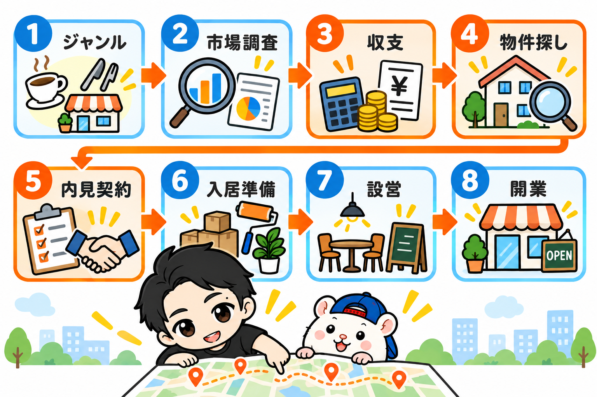

レンタルスペースは、8つの手順を順番どおりに進めれば、はじめてでも開業までたどり着けます。
ぼくが5年で累計23部屋を出してきた手順を、8ステップにして全部書きます。
ぼくの1号店は、37歳の会社員のときに出しました。
家でお酒を飲みながらアットホームを眺めていて、酔った勢いで問い合わせボタンを押した物件です。
初期投資は90万円。
7ヶ月で回収して、5年たったいまも毎月15万円ほどの利益が出ています。
そこから5年で、累計23部屋。
売上は累計1.5億円を超えました。
赤字物件はゼロです。
ただ、撤退も6部屋あります(この話も、あとで書きます)。
この記事は、はじめての人のための地図です。
1つずつのステップには、もっと深い話があります。
でも、最初に要るのは深さではなく、全体の順番です。
ブックマークして、いま自分がいるステップから読んでください。
全体の地図: 8ステップと、かかる時間

- ジャンルを決める(1週間)
- 市場調査: 人気店を4Pで見る(1〜2週間)
- 競合を丸裸にして、収支を試算する(1〜2週間)
- 物件を探す(1〜3ヶ月)
- 内見・交渉・契約(2〜4週間)
- 入居前の準備(契約から入居までのあいだ)
- 入居・設営(数日〜2週間)
- ポータル登録と、オープン直後の値付け(数日)
いちばん時間がかかるのは、4の物件探しです。
そして、いちばん大事なのは3と4と5。
勝負の8割は、契約する前に決まります。
STEP1 ジャンルを決める
レンタルスペースのジャンルは、大きく5つです。
・パーティースペース
・ダンススタジオ
・撮影スタジオ
・貸し会議室(ワークスペース)
・レンタルサロン
選び方の軸は、「どんな働き方をしたいか」です。
・当たったときの爆発力を狙うなら、パーティー
・リピーターで堅実にいくなら、ダンス
・センスを活かしたいなら、撮影
・低コストで手堅く始めたいなら、貸し会議室
レンタルサロンは、薄利で手間が多いと聞くので、ぼくはまだやっていません。
手残りの目安も、ジャンルでかなり違います。
軌道に乗った部屋で、小箱の貸し会議室なら月3〜5万円。
ダンススタジオなら月10〜20万円です。
ぼくの主戦場は、ダンスです。
累計の売上のうち、ダンススタジオだけで8,300万円を超えました(全体の約65%)。
収益の8〜9割がリピーターで埋まることも、珍しくありません。
その代わり、音と振動で大家さんの許可が下りにくく、物件探しがいちばんの難関です。
広さは、最初は小箱か中箱
・小箱: 20平米未満(1〜4名)
・中箱: 20〜50平米(5〜10名)
・大箱: 50平米以上(10名以上)
最初から大箱は、おすすめしません。
家賃も内装の費用も、はね上がるからです。
おすすめは「ハイブリッド型」
用途を1つに絞らず、組み合わせる方法です。
「パーティースペース×貸し会議室」なら、昼は会議、夜はパーティー。
予約の入り口が、2つになります。
▼くわしく: ジャンルの選び方
https://rental-space.net/articles/2026-02-15-how-to-start-genre-selection.html
STEP2 市場調査: 人気店を4Pで見る
ジャンルが決まっても、まだ物件は探しません。
先に、市場調査です。
ここを飛ばして「なんとなく良さそうな物件」を借りると、オープンしてから予約が入らない、ということが起きます。
使うのは、3つだけです。
・インスタベース
・スペースマーケット
・Google検索
ポータルで、狙っているエリアとジャンルを検索します。
人気順にして、上から5〜10店をピックアップ。
その店が「なぜ選ばれているか」を、4つの視点で見ていきます。
・Product(商品): 誰向けか。広さ、何人入るか、内装の雰囲気、備品
・Price(価格): 平日と土日の差、3時間パックや1日貸切、長時間割・直前割・レビュー割
・Place(場所): 駅から何分か、1階にコンビニがあるか、オフィス街か住宅街か
・Promotion(伝え方): メイン写真の角度と明るさ、キャッチコピー、公式HPがあるか、レビューで褒められている点と不満な点
レンタルスペースは、競合の内装も、価格も、予約カレンダーまで、ぜんぶ見えます。
答えを見てから出店できる、カンニングOKの試験です。
気になった店は、スプレッドシートにURLを貼って集めます。
「この店のここをまねしたい」「ここならぼくのほうが勝てる」。
そう言えるようになるまで、物件は契約しません。
▼くわしく: 市場調査術
https://rental-space.net/articles/2026-02-16-how-to-start-market-research.html
STEP3 競合を丸裸にして、収支を試算する
ここが、この記事でいちばん「有料級」のところです。
家賃10万円のダンススタジオを例にします。
・売上: 月35万円
・ポータル手数料(35%): −12万2,500円
・家賃: −10万円
・光熱費・通信費・消耗品: −2万5,000円
・手残り: 約10万円
売上35万円と聞くと、けっこう儲かりそうに見えます。
でも、残るのは10万円。
売上の7割は、手数料と家賃と経費で消えます。
これを知らずに「売上いけそうだから、家賃15万円でも大丈夫」と契約すると、同じ売上でも手残りは約5万円まで下がります。
だから、契約する前に計算します。
しかも、自分の予想ではなく、競合の実際の数字で。
競合の売上は、予約カレンダーで分かる
- 同じエリア・同じジャンルの人気店を1つ選ぶ
- ポータルの予約カレンダーを、1週間、毎日見る
- 埋まった時間×料金で、1週間の売上を出す
- それを1ヶ月分に広げて、月の売上を出す
- 手数料(30〜35%)を引く
- 家賃を引く(同じビルの空室情報や、AIで相場を推測)
- Wi-Fi・水道光熱費・清掃の外注費を、相場で引く
これで、その店の手残りが見えます。
「このエリア、このジャンルで出したら、いくら残るか」が、出す前に分かるわけです。
初期費用は、見学で分かる
次に、その競合を実際に予約して、お客さんとして使ってみます。
1店舗あたり、数千円〜1万円くらいかかります。
部屋にある家具や備品は、ほとんどがネット通販で買えるものです。
1点ずつ検索してリストにすれば、備品にいくらかけたかが分かります。
そこに物件の契約金を足せば、初期費用の見当がつきます。
ぼくは秋葉原に出すとき、この方法で13店舗を調べました。
視察1回が、そのまま発注リストになりました。
初期費用の式は、3つだけ
・契約関連: 家賃の約4ヶ月分+火災保険
・内装: 床・壁・照明・トイレなど
・家具・備品: ジャンルで変わる
家賃10万円・敷金1ヶ月・礼金1ヶ月なら、敷金・礼金・仲介手数料・保証会社で4ヶ月分の40万円。
火災保険の2万円を足して、契約関連だけで約42万円です。
ぼくの23部屋の初期費用は、いちばん安い部屋で27万円、いちばん高い部屋で214万円でした。
27万円は、敷金・礼金ゼロの小さな貸し会議室。
214万円は、鏡と工事で100万円近くかかったダンススタジオです。
回収は、初期費用÷手残り
初期費用100万円で、手残りが月10万円なら、回収は10ヶ月。
ぼくの23部屋も、多くは1年前後で回収しています。
早い部屋で7ヶ月、2年かかった部屋もあります。
この計算は、候補の物件が出てきたら、その物件の家賃でもう一度やります。
数字で「勝てる」と言えない物件は、借りない。
ぼくが赤字物件を出していない理由の1つが、これです。
自分の候補物件の数字を入れて計算する表は、教科書の付録に入れました(最後に書きます)。
▼くわしく: 家賃10万円のレンタルスペース、月いくら残るの?
https://rental-space.net/articles/2026-09-03-rent-100k-profit.html
▼くわしく: 初期費用はいくら?23部屋分の実額
https://rental-space.net/articles/2026-08-25-rental-space-startup-cost.html
▼くわしく: 競合視察しないで出店してるってマジ?
https://rental-space.net/articles/2026-08-18-competitor-visit-before-opening.html
STEP4 物件を探す
物件探しのメインは、アットホームです。
レンタルスペースに向いた「店舗・事務所」の掲載が、圧倒的に多いからです。
条件を絞りすぎない
「家賃8万円以下・駅徒歩5分・25平米以上・1階」。
こう検索すると、ヒットはゼロか数件です。
家賃は予算+2〜3万円まで、駅徒歩は10分まで広げます。
業種の絞り込みは、使いません。
「アミューズメント」「スタジオ・ホール」で絞ると、9割以上の物件が消えるからです。
「事務所」や「店舗」の物件でも、聞いてみたらOKが出ることはよくあります。
「事務所可」の住居も見る
居住用マンションの「事務所利用可」は、見落とされがちな穴場です。
家賃も初期費用も安めで、ワークスペースや少人数の撮影スタジオなら、許可も下りやすいです。
問い合わせはメールで、用途は正直に
レンタルスペースは、民泊と同じくらい敬遠されやすい業種です。
だから最初の問い合わせで、誠実さを見せます。
・名前(あれば屋号や社名)
・用途(「レンタルスペース」「撮影スタジオ」「貸し会議室」など、はっきり)
・実績(はじめてなら、本気度が伝われば十分です)
用途をぼかすと、内見や契約まで進んでから「やっぱりNG」になります。
個人の不動産屋さんを味方にする
大手より、個人経営や少人数の仲介業者さんがおすすめです。
1件の成約が、そのまま自分の収入になるからです。
「将来は3店舗、5店舗と増やしたい」と伝えてみてください。
業者専用のサイト(レインズ)を毎日見て、あなたの代わりに探してくれる分身になってくれます。
逆引きリサーチ
人気スペースのビル名を調べて、そのビルの空室をGoogleで探す方法です。
「同じビルで撮影スタジオが営業されていますよね。ぼくも同じ用途で借りたいです」
大家さんの許可が、すでに下りている前例があります。
説明もいらず、審査も通りやすい。
お宝物件は、ライバルの隣にあるかもしれません。
物件探しは、確率論
30件問い合わせて、内見まで行けるのは1〜2件。
それがふつうです。
心を折らずに、淡々と数をこなします。
候補が出たら、その家賃でSTEP3の計算をやり直してください。
▼くわしく: 儲かる物件探し術
https://rental-space.net/articles/2026-02-21-how-to-start-property-hunting.html
STEP5 内見・交渉・契約
内見は、見学ではありません。
その物件が、安定してお金を生めるかを見きわめる場です。
持ち物は「3種の神器」
・メジャー: レーザー距離計と、5m以上の巻き尺の2本立て
・Bluetoothスピーカー: 音漏れと振動の確認用
・名刺: 屋号がなくても作っておく。真剣さが伝わって、交渉がスムーズになります
見るのは「建物と音」
鉄筋コンクリートに見えても、となりの部屋との壁だけボード1枚、ということがあります。
壁を軽くたたいて、軽い音がしないか確かめます。
スピーカーで大きめに音楽を流して、となりや上下、廊下にどれくらい響くか。
ダンスなら、床を踏み鳴らして振動も見ます。
ほかのテナントがいるなら、下の階でどう聞こえるかまで確かめさせてもらいます。
ぼくの撤退6部屋のうち1部屋は、下の階からの騒音クレームでした。
利益は出ていた部屋です。
正直、めちゃくちゃ悔しかった。
「とりあえず借りて、ダメならそのとき考える」は、レンタルスペースでは通用しません。
「設備」か「残置物」か
エアコンや照明が「設備」なら、壊れても大家さんの負担で直してもらえます。
「残置物」なら、壊れたら自分で直します。
業務用エアコンを新しくすると、数十万円単位の出費です。
古すぎるなら、入居前に交換を相談します。
「和式トイレを洋式にしてもらえるなら、即決します」のような条件つきの提案も、このタイミングです。
交渉は「フリーレント」と「敷金・礼金」
入居してから予約が入るまでは、売上ゼロで家賃だけかかります。
だからぼくは、フリーレント(家賃がかからない期間)を必ず相談します。
「内装を整えて物件の価値を上げるので、その間の1ヶ月分を無料にしてほしい」
大家さんにもメリットがある形にするのが、コツです。
敷金・礼金も、「その分を内装に回して、よりよいスペースにしたい」と伝えれば相談できます。
交渉はタダです。
通ればラッキー、くらいで大丈夫です。
入居日は、準備が整う日から逆算
入居日には内装屋さんが入り、家具が届き、数日後には撮影まで終わる。
そうなるように、入居日を決めます。
年末年始のような繁忙期に間に合わせたいなら前倒しに、閑散期なら後ろ倒しにして、むだな家賃を払わないようにします。
申し込み・審査・契約
申し込みの時点では、まだ法的な拘束力はありません。
審査のあいだに「収支が合わない」と分かったら、契約の前に辞退できます。
審査では、会社員の信用力が大きな武器になります。
「副業だから落とされるかも」という心配は、いりません。
ハンコを押す前に、この2つだけは自分の目で確認してください。
・解約予告期間: 退去するとき、何ヶ月前に言えばいいか
・敷金の償却(敷引き): 退去のとき、敷金がいくら返ってくるか
どちらも、いざというときの逃げ道です。
▼くわしく: 内装・残置の確認からフリーレント交渉の全手順
https://rental-space.net/articles/2026-02-22-how-to-start-interior-negotiation.html
STEP6 入居前の準備(10項目)
契約から入居までは、待ち時間ではありません。
仕込みの時間です。
入居した瞬間から、家賃はかかります。
入居したら1日でも早くオープンできるように、このあいだに10個を片づけます。
- 内装業者に発注: Google検索や、一括見積もりのサービス(家仲間コム・くらしのマーケットなど)で比べる。入居前でも、現地調査はさせてもらえることが多いです
- 家具・備品を発注: 入居日に届くよう日時指定。年末年始・お盆・GW・Amazonのセールの時期は、配送が遅れます
- カメラマンに発注: 高くても5万円以内がほとんど。写真は予約率に直結するので、ここだけはケチらない
- ネット・電気・水道の契約: ネットの回線工事は時間がかかるので最優先。間に合わないときはホームルーター
- お店の名前を決める: 奇をてらわず、口に出しやすく、「レンタルスタジオ○○ △△店」のようにシリーズにしやすい名前に。ロゴはCanvaやAIで
- 看板・ウィンドウサインを発注: 小さい看板なら、ラクスルで数千円から
- Googleカレンダーを準備: 店舗用のGoogleアカウントを作り、ポータルとつないでダブルブッキングを防ぐ。運営の生命線です
- SNSアカウントを作る: 撮影スタジオなら、Instagramは必須
- 公式ホームページを作る: ダンスや貸し会議室のように、リピーターが多いジャンルなら。ポータルの手数料は30〜35%ですが、公式HP経由の直接予約なら決済手数料の約3.5%だけです
- ポータルへの申請を準備: 申請のタイミングはSTEP8で
ちなみに1号店は、ネットの工事や業者選びが面倒で、ホームルーターにしました。
5年間、問題なく使えています。
ダンススタジオの鏡も、1号店では幅90cmのパネルミラーを1枚3万円ほどで5枚買って、壁にビスで留めました。
材料費は20万円以内です。
業者さんに壁一面の鏡を頼むと50万円を超えるので、ここがいちばん大きな差になりました。
▼くわしく: 契約してから入居前にやるべき準備
https://rental-space.net/articles/2026-02-23-how-to-start-pre-move-in.html
STEP7 入居・設営
入居したら、一気に設営です。
道具は4つ
・電動ドライバー: 充電式の安いものでOK。家具の組み立てに使う六角のアタッチメントと、下穴用の木工ドリルビットがあると楽です
・軍手
・テプラ: 掲示物づくりに
・強力両面テープ: 100均のスポンジタイプ。ふつうの両面テープだと、掲示物が落ちます
掲示物は、スタッフの代わり
レンタルスペースには、スタッフがいません。
だから、お客さんが迷わないように、使い方を貼っておきます。
・エアコンの使い方、照明のスイッチ、ゴミの捨て方
・Wi-FiのQRコード(パウチしておかないと、すぐボロボロになります)
・公式HPや、定期利用の問い合わせフォームのQRコード
ぼくは、使い方の説明をあえて手書きにすることもあります。
印字より、人の温度が伝わるからです。
無人のお店では、掲示物がそのまま接客になります。
道順の案内を作る
駅の出口からお店まで、実際に歩いて、目印ごとに写真を撮ります。
Googleドキュメントにまとめて「ここを右」と説明を添え、リンクを知っている全員に公開。
そのリンクを、ポータルの紹介ページと、予約後の自動メールに入れます。
「場所が分からない」という問い合わせが、ぐっと減ります。
仮の写真を撮っておく
カメラマンの撮影まで間があるなら、スマホの広角で仮の写真を撮っておきます。
部屋の四隅から、対角線に向けて撮るのがコツです。
これで、ポータルの申請を先に進められます。
▼くわしく: 入居〜設営の完全チェックリスト
https://rental-space.net/articles/2026-02-24-how-to-start-setup-checklist.html
STEP8 ポータル登録と、オープン直後の値付け
最後のステップです。
登録するポータルは、この5つです。
・インスタベース
・スペースマーケット
・カシカシ
・スペイシー(現ヨヤッピン)
・空箱 by GMO
これ以外は、いりません。
ぼくは以前、10万円を払って別のポータルに載せたことがあります。
予約は、1件も入りませんでした。
申請は、オープンの数日前
ポータルには、掲載直後だけ検索の上のほうに出る「新着ボーナス期間」があります。
オープン前に早く申請すると、このいちばんおいしい期間をむだにします。
申請は、オープンできる日の数日前です。
最初は「金額」より「件数」
レンタルスペースの単価は、本来しっかり取るべきです。
でも、オープン直後だけは例外です。
新着ボーナスの期間に予約の件数を積むほど、そのあとも検索順位で優遇されます。
最初は価格を抑えて、件数を取りにいきます。
・予約が入らない → 下げる
・予約が入っている → 上げる
この調整を、はじめのうちほどこまめにやります。
軌道に乗ったら、少しずつ本来の単価に戻します。
レビューは、仕組みで集める
・レビュー必須プラン: 「レビューを書いてくれたら1時間100円引き」のようなプランを作る
・先に星5: 利用の翌日までにお礼のメッセージを送り、「お客様へのレビューで星5をつけさせていただきました」と書く
こちらから先に星5を送ると、「こっちも書かなきゃな」と思ってもらいやすくなります。
トラブルは、経験値
鍵の紛失、備品の故障、ダブルブッキング。
どれだけ準備しても、トラブルはゼロにはなりません。
でも、1つずつ対応するうちに手順がたまり、いずれは外注さんに渡せるマニュアルになります。
▼くわしく: ポータルサイト登録と価格戦略
https://rental-space.net/articles/2026-02-25-how-to-start-portal-pricing.html
開業したあと: 1部屋=月10万円の足し算
オープンして軌道に乗ると、作業はぐっと減ります。
予約の通知を見て、たまに来る質問に定型文で答える。
清掃は、週1回・1回1,000〜1,500円で外注できます。
1店舗あたり、1日数分です。
軌道に乗った部屋の手残りは、平均で月10万円前後。
この「1部屋=月10万円」で考えると、副業の計画が足し算になります。
・月10万円の副収入がほしい → 1部屋
・月30万円(生活費くらい) → 3部屋
・月50万円(給料をこえる) → 5部屋
ぼくはこの足し算を実際にやって、給料をこえたところで会社を辞めました。
40歳のときです。
精神論ではなく、足し算です。
もちろん、全部がうまくいくわけではありません。
ぼくは撤退も6部屋しています。
1部屋は、さっき書いた騒音クレーム。
5部屋は、ビルの再開発による撤退でした。
それでも、赤字が続いた部屋はありません。
この記事に書けなかったこと
ここまでで、8ステップの地図はそろいました。
ただ、地図だけでは足りないところが3つあります。
- 自分の候補物件の数字: STEP3の計算を、自分の物件の家賃・広さ・ジャンルで回すこと
- 判断の基準: 「この物件は借りる、借りない」の線をどこに引くか
- 開業してからの仕組み: 清掃・問い合わせ・数字の管理を、1日数分で回す作り方
この3つは、1本の記事では書ききれません。
なので、教科書にまとめました。
『レンタルスペース経営の教科書』は、全9部・約11万字・付録15点です。
この記事の8ステップは、教科書ではこう対応しています。
・STEP1 ジャンル → 第1部 ジャンル選定
・STEP3 収支 → 第3部 収支シミュレーション
・STEP4・5 物件 → 第2部 物件
・STEP6・7 準備と設営 → 第4部 立ち上げ
・STEP8 ポータル → 第5部 集客
・開業したあと → 第6部 運営・第7部 数字の経営・第8部 拡大
付録には、この記事で出てきた作業の道具を入れました。
・競合調査(付録①)・利益シミュレーション(付録⑥)・初期費用(付録⑰): STEP3の計算を、自分の物件で
・物件判定(付録⑲)・内見チェックリスト(付録⑤): STEP4・5の見きわめに
・発注リスト(付録⑬)・開業チェックリスト(付録⑯)・室内掲示物(付録⑱): STEP6・7の準備に
・清掃報告アプリ「ほうこ君」(付録⑪): 開業したあとの清掃の外注に
教科書の第0部(儲かるか・いくらかかるか・自分にできるか)は、まるごと無料で読めます。
まずはそこから、読んでみてください。
まとめ: 今日やる3つ
8ステップを、もう一度。
- ジャンル: 働き方で選ぶ。最初は小箱か中箱
- 市場調査: 人気店を4Pで見る。勝てるイメージが湧くまで契約しない
- 収支: 競合の予約カレンダーから手残りを出す。数字で勝てない物件は借りない
- 物件探し: アットホームで広く。30件問い合わせて内見1〜2件の確率論
- 内見・契約: 3種の神器で音と振動を確かめる。フリーレントは必ず相談
- 入居前: 10項目を、契約から入居までに片づける
- 設営: 掲示物・道順・仮写真で、最速オープン
- ポータル: 申請はオープンの数日前。最初は件数、レビューは仕組みで
今日やることは、3つです。
・ポータルを開いて、近所の人気店を1つ、4Pで見る
・その店の予約カレンダーを、今日から1週間、毎日見る
・アットホームで、気になる物件に1回だけ問い合わせてみる
ぼくの1号店は、酔った勢いで押した問い合わせボタンから始まりました。
最初の一歩は、そのくらいでいいと思います。
あなたが最初に出したいのは、どのジャンルですか?
▼もう1つの副業、AI社員だけのeBay輸出店の実録🐹
https://note.com/cham_ebay
▼ブログ(レンスペ×eBay、全記事まとめ)
https://rental-space.net
レンタルスペースの数字とやり方は、教科書にぜんぶ書いています。
レンタルスペース経営の教科書(公式サイト最安 ¥17,800)
https://rental-space.net/kyokasho/
※発売記念価格です。3部売れるごとに2,000円ずつ値上げします。